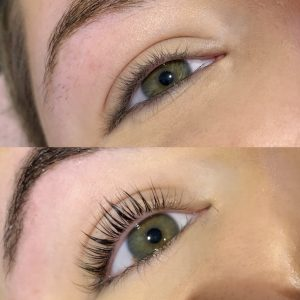

Classics Lashes
Using the classic technique, one individual lash is applied to one natural lash to create a set of longer and thicker lashes. They are simple, beautiful and natural-looking eyelash extensions.

by @lashessbyjade_
This a directory of lash extentions design. I hope this helps you visualize a look for yourself.
Using the classic technique, one individual lash is applied to one natural lash to create a set of longer and thicker lashes. They are simple, beautiful and natural-looking eyelash extensions.
This involves the application of multiple lightweight lash extensions to each natural lash. Instead of applying one extension per lash, the lash artist creates handmade lash fans by carefully selecting and grouping several fine extensions together. This technique allows for a fuller, more dramatic, and glamorous look.

Hybrid lashes combine one-to-one Classic lashes and Volume fans with 4-8 lashes in each fan. This a beautiful textured look that's soft and wispy yet still totally glam, thanks to the combination of classis and volume techniques.

The natural lashes are boosted from the root, giving them a lifted; is an all-natural, semi-permanent procedure that gives you the appearance of fuller, thicker eyelashes.
